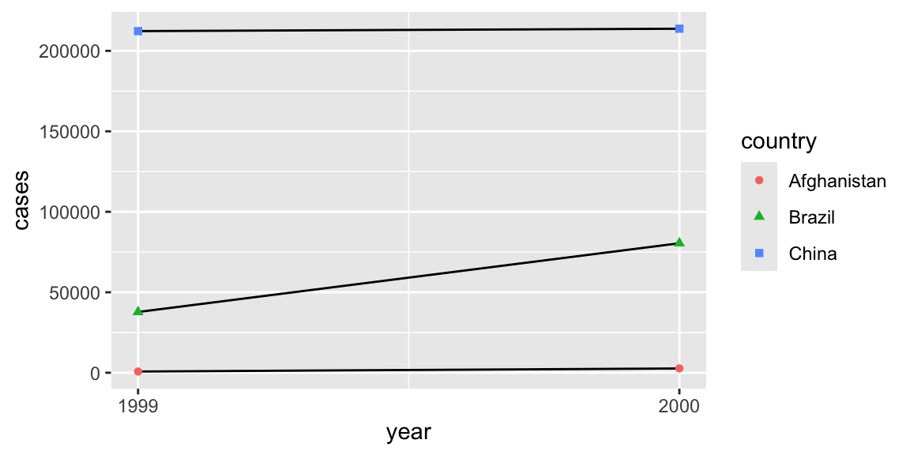
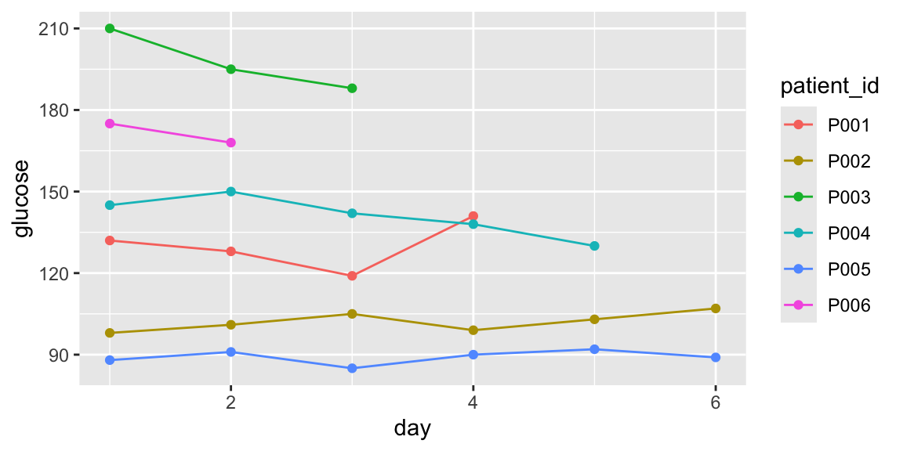

# A tibble: 6 × 4
country year cases population
<chr> <dbl> <dbl> <dbl>
1 Afghanistan 1999 745 19987071
2 Afghanistan 2000 2666 20595360
3 Brazil 1999 37737 172006362
4 Brazil 2000 80488 174504898
5 China 1999 212258 1272915272
6 China 2000 213766 1280428583Module 5: Data Wrangling II
PUBHLT0411: Statistical Packages for Public Health Data Analysis
Rebecca Deek, PhD
University of Pittsburgh, Biostatistics and Health Data Science
Reshaping data: tidyr
Tidy Data
- Data often is not formatted to be easy to analyze. Instead it is typically formatted for easy data collection.
- “Tidy” data are easy to manipulate, model and visualize. They tend to have the following structure:
- Variables are columns, observations are rows, and values are cells.

- The
tidyrpackage helps with this!
Same data, three layouts
These three tables all describe tuberculosis (TB) surveillance: country, year, number of cases, and population.
# A tibble: 12 × 4
country year type count
<chr> <dbl> <chr> <dbl>
1 Afghanistan 1999 cases 745
2 Afghanistan 1999 population 19987071
3 Afghanistan 2000 cases 2666
4 Afghanistan 2000 population 20595360
5 Brazil 1999 cases 37737
6 Brazil 1999 population 172006362
7 Brazil 2000 cases 80488
8 Brazil 2000 population 174504898
9 China 1999 cases 212258
10 China 1999 population 1272915272
11 China 2000 cases 213766
12 China 2000 population 1280428583table1matches the format on the prior slide. Each column is a variable and each row is an observation per country per year. Each cell is a value.
Why tidy?
- Consistency: If there is a consistent data structure, it’s easier to learn the tools that work with that structure due to the underlying uniformity.
- Vectorization: R and the tidyverse are built to operate on columns of values, allowing R’s vectorization to shine.
- A tidy layout is a natural byproduct.
Tidy data in action
- Computing a rate.
# A tibble: 6 × 5
country year cases population rate
<chr> <dbl> <dbl> <dbl> <dbl>
1 Afghanistan 1999 745 19987071 0.373
2 Afghanistan 2000 2666 20595360 1.29
3 Brazil 1999 37737 172006362 2.19
4 Brazil 2000 80488 174504898 4.61
5 China 1999 212258 1272915272 1.67
6 China 2000 213766 1280428583 1.67 - Plotting.

Try writing code using table2 or table3 instead (it takes a lot more work).
Data reshaping with pivot_*
- The two main functions to reshape and tidy data are
pivot_longer()andpivot_wider(). - “Lengthen” data by collapsing several columns into two.
- Column names move to a new
names_tocolumn and values to a newvalues_tocolumn.
- Column names move to a new
- “Widen” data by expanding two columns into several.
- One column provides the new column names, the other the values.
Lengthening data: Glucose data
A diabetes-prevention study asks six participants to record fasting glucose (mg/dL) each morning for six days. Some participants’ monitors stopped recording early and are recorded as NA.
glucose_wide = tibble::tribble( # create a tbl and fill by row
~patient_id, ~day1, ~day2, ~day3, ~day4, ~day5, ~day6, # defines column names
"P001", 132, 128, 119, 141, NA, NA,
"P002", 98, 101, 105, 99, 103, 107,
"P003", 210, 195, 188, NA, NA, NA,
"P004", 145, 150, 142, 138, 130, NA,
"P005", 88, 91, 85, 90, 92, 89,
"P006", 175, 168, NA, NA, NA, NA
)
glucose_wide# A tibble: 6 × 7
patient_id day1 day2 day3 day4 day5 day6
<chr> <dbl> <dbl> <dbl> <dbl> <dbl> <dbl>
1 P001 132 128 119 141 NA NA
2 P002 98 101 105 99 103 107
3 P003 210 195 188 NA NA NA
4 P004 145 150 142 138 130 NA
5 P005 88 91 85 90 92 89
6 P006 175 168 NA NA NA NA- This data is in “wide” format: there is one observation per person.
- We would like to reshape the data such that each row represents one glucose reading per day per patient.
- The column names (
day1…day6) will be values of a variable, not variable names.
- The column names (
How pivot_longer works

How pivot_longer works


pivot_longer()
# A tibble: 36 × 3
patient_id day glucose
<chr> <chr> <dbl>
1 P001 day1 132
2 P001 day2 128
3 P001 day3 119
4 P001 day4 141
5 P001 day5 NA
6 P001 day6 NA
7 P002 day1 98
8 P002 day2 101
9 P002 day3 105
10 P002 day4 99
# ℹ 26 more rowsLet’s breakdown the arguments of the function:
cols: which columns to pivot (same syntax asdplyr::select()).names_to: name for the new column that holds the old column names.values_to: name for the new column that holds the cell values."day"and"glucose"are quoted because they are new variables that don’t exist yet.
pivot_longer(): Alternative syntax
# A tibble: 36 × 3
patient_id day glucose
<chr> <chr> <dbl>
1 P001 day1 132
2 P001 day2 128
3 P001 day3 119
4 P001 day4 141
5 P001 day5 NA
6 P001 day6 NA
7 P002 day1 98
8 P002 day2 101
9 P002 day3 105
10 P002 day4 99
# ℹ 26 more rows# A tibble: 36 × 3
patient_id day glucose
<chr> <chr> <dbl>
1 P001 day1 132
2 P001 day2 128
3 P001 day3 119
4 P001 day4 141
5 P001 day5 NA
6 P001 day6 NA
7 P002 day1 98
8 P002 day2 101
9 P002 day3 105
10 P002 day4 99
# ℹ 26 more rowsDropping missing values
- Occasionally (but not always), we may want to remove
NAvalues, depending on the reason for missingness. - One way to do so is with
values_drop_na = TRUE.- Default is
FALSEand probably safer.
- Default is
# A tibble: 26 × 3
patient_id day glucose
<chr> <chr> <dbl>
1 P001 day1 132
2 P001 day2 128
3 P001 day3 119
4 P001 day4 141
5 P002 day1 98
6 P002 day2 101
7 P002 day3 105
8 P002 day4 99
9 P002 day5 103
10 P002 day6 107
# ℹ 16 more rowsRegex: The day variable
- We don’t really need the
dayprefix for the values in thedayvariable. parse_number()is a function that drops any non-numeric characters before the first number and all characters after the first number.- Example of regular expressions (project idea!!)
# A tibble: 36 × 3
patient_id day glucose
<chr> <dbl> <dbl>
1 P001 1 132
2 P001 2 128
3 P001 3 119
4 P001 4 141
5 P001 5 NA
6 P001 6 NA
7 P002 1 98
8 P002 2 101
9 P002 3 105
10 P002 4 99
# ℹ 26 more rowsPlotting long data
Warning: Removed 10 rows containing missing values or values outside the scale range
(`geom_line()`).Warning: Removed 10 rows containing missing values or values outside the scale range
(`geom_point()`).
- Note:
ggplot2automatically dropped theNAvalues for us and provided a warning.
Column names: Many variables
- One challenging type of data tidying occurs when multiple pieces of information are stored in the column names.
- Would like to store these in separate new variables.
# A tibble: 7,240 × 58
country year sp_m_014 sp_m_1524 sp_m_2534 sp_m_3544 sp_m_4554 sp_m_5564
<chr> <dbl> <dbl> <dbl> <dbl> <dbl> <dbl> <dbl>
1 Afghanistan 1980 NA NA NA NA NA NA
2 Afghanistan 1981 NA NA NA NA NA NA
3 Afghanistan 1982 NA NA NA NA NA NA
4 Afghanistan 1983 NA NA NA NA NA NA
5 Afghanistan 1984 NA NA NA NA NA NA
6 Afghanistan 1985 NA NA NA NA NA NA
7 Afghanistan 1986 NA NA NA NA NA NA
8 Afghanistan 1987 NA NA NA NA NA NA
9 Afghanistan 1988 NA NA NA NA NA NA
10 Afghanistan 1989 NA NA NA NA NA NA
# ℹ 7,230 more rows
# ℹ 50 more variables: sp_m_65 <dbl>, sp_f_014 <dbl>, sp_f_1524 <dbl>,
# sp_f_2534 <dbl>, sp_f_3544 <dbl>, sp_f_4554 <dbl>, sp_f_5564 <dbl>,
# sp_f_65 <dbl>, sn_m_014 <dbl>, sn_m_1524 <dbl>, sn_m_2534 <dbl>,
# sn_m_3544 <dbl>, sn_m_4554 <dbl>, sn_m_5564 <dbl>, sn_m_65 <dbl>,
# sn_f_014 <dbl>, sn_f_1524 <dbl>, sn_f_2534 <dbl>, sn_f_3544 <dbl>,
# sn_f_4554 <dbl>, sn_f_5564 <dbl>, sn_f_65 <dbl>, ep_m_014 <dbl>, …- WHO tuberculosis diagnosis data:
country,year, and 56 other columns likesp_m_014.- Contain the diagnosis method, sex, and age range in the column name.
- E.g.,
sp= positive pulmonary smear,m= male,014= 0-14 year old.
Column names: Many variables
# A tibble: 405,440 × 6
country year diagnosis gender age count
<chr> <dbl> <chr> <chr> <chr> <dbl>
1 Afghanistan 1980 sp m 014 NA
2 Afghanistan 1980 sp m 1524 NA
3 Afghanistan 1980 sp m 2534 NA
4 Afghanistan 1980 sp m 3544 NA
5 Afghanistan 1980 sp m 4554 NA
6 Afghanistan 1980 sp m 5564 NA
7 Afghanistan 1980 sp m 65 NA
8 Afghanistan 1980 sp f 014 NA
9 Afghanistan 1980 sp f 1524 NA
10 Afghanistan 1980 sp f 2534 NA
# ℹ 405,430 more rowsnames_to: can take a vector of new column names.names_sep: tellspivot_longer()how to split each original column name into multiple values.
Column names: Variables and values
- Another challenging type of data tidying occurs when column names include a mix of variable values and variable names
clinic_visits = tibble::tribble(
~patient_id, ~date_visit1, ~sbp_visit1, ~date_visit2, ~sbp_visit2,
1, "2023-01-05", 128, "2023-04-02", 122,
2, "2023-01-06", 145, NA, NA,
3, "2023-01-10", 118, "2023-04-15", 115,
4, "2023-01-12", 160, "2023-04-20", 150,
5, "2023-01-15", 135, NA, NA
) |>
dplyr::mutate(dplyr::across(tidyselect::starts_with("date"), as.Date))
clinic_visits# A tibble: 5 × 5
patient_id date_visit1 sbp_visit1 date_visit2 sbp_visit2
<dbl> <date> <dbl> <date> <dbl>
1 1 2023-01-05 128 2023-04-02 122
2 2 2023-01-06 145 NA NA
3 3 2023-01-10 118 2023-04-15 115
4 4 2023-01-12 160 2023-04-20 150
5 5 2023-01-15 135 NA NA- The column names of this dataset contain the names of two variables (
date,sbp) and the values of another (visit, with values 1 or 2)
pivot_longer: The .value sentinel
- A vector must be supplied to
names_tobut this time we use the special “.value” sentinel.- This isn’t the name of a variable but a unique value that tells
pivot_longer()to override the usualvalues_toargument.
- This isn’t the name of a variable but a unique value that tells
# A tibble: 10 × 4
patient_id visit date sbp
<dbl> <chr> <date> <dbl>
1 1 1 2023-01-05 128
2 1 2 2023-04-02 122
3 2 1 2023-01-06 145
4 2 2 NA NA
5 3 1 2023-01-10 118
6 3 2 2023-04-15 115
7 4 1 2023-01-12 160
8 4 2 2023-04-20 150
9 5 1 2023-01-15 135
10 5 2 NA NA- Uses the first component of the pivoted column names (
date,sbp) as a variable name in the output. - Could use
values_drop_na = TRUEto remove the rows for the second visit that never happened.
Data reshaping with pivot_*
- The two main functions to reshape and tidy data are
pivot_longer()andpivot_wider(). - “Lengthen” data by collapsing several columns into two.
- Column names move to a new
names_tocolumn and values to a newvalues_tocolumn.
- Column names move to a new
- “Widen” data by expanding two columns into several.
- One column provides the new column names, the other the values.
Widening Data: Patient survey data
- Increasing the number of columns (reducing the number of rows), by spreading one observation across columns.
# A tibble: 500 × 5
org_pac_id org_nm measure_cd measure_title prf_rate
<chr> <chr> <chr> <chr> <dbl>
1 0446157747 USC CARE MEDICAL GROUP INC CAHPS_GRP… CAHPS for MI… 63
2 0446157747 USC CARE MEDICAL GROUP INC CAHPS_GRP… CAHPS for MI… 87
3 0446157747 USC CARE MEDICAL GROUP INC CAHPS_GRP… CAHPS for MI… 86
4 0446157747 USC CARE MEDICAL GROUP INC CAHPS_GRP… CAHPS for MI… 57
5 0446157747 USC CARE MEDICAL GROUP INC CAHPS_GRP… CAHPS for MI… 85
6 0446157747 USC CARE MEDICAL GROUP INC CAHPS_GRP… CAHPS for MI… 24
7 0446162697 ASSOCIATION OF UNIVERSITY PHYSI… CAHPS_GRP… CAHPS for MI… 59
8 0446162697 ASSOCIATION OF UNIVERSITY PHYSI… CAHPS_GRP… CAHPS for MI… 85
9 0446162697 ASSOCIATION OF UNIVERSITY PHYSI… CAHPS_GRP… CAHPS for MI… 83
10 0446162697 ASSOCIATION OF UNIVERSITY PHYSI… CAHPS_GRP… CAHPS for MI… 63
# ℹ 490 more rows- Centers for Medicare & Medicaid Services data:
- One row per measure, six measures per organization.
- Want to look at measures per organization \(\rightarrow\) one row per organization.
Patient survey data: Measures
# A tibble: 6 × 2
measure_cd measure_title
<chr> <chr>
1 CAHPS_GRP_1 CAHPS for MIPS SSM: Getting Timely Care, Appointments, and Infor…
2 CAHPS_GRP_2 CAHPS for MIPS SSM: How Well Providers Communicate
3 CAHPS_GRP_3 CAHPS for MIPS SSM: Patient's Rating of Provider
4 CAHPS_GRP_5 CAHPS for MIPS SSM: Health Promotion and Education
5 CAHPS_GRP_8 CAHPS for MIPS SSM: Courteous and Helpful Office Staff
6 CAHPS_GRP_12 CAHPS for MIPS SSM: Stewardship of Patient Resources measure_titlegives a description of the measure coded inmeasure_cd. We’ll focus on the latter for now since it is shorter and better for naming.
pivot_wider()has the opposite interface to pivot_longer().- Instead of choosing new column names, we need to provide the existing columns that define the values (
values_from) and the column name (names_from). - E.g.,
names_from = measure_cd.
- Instead of choosing new column names, we need to provide the existing columns that define the values (
How pivot_wider() works
Let’s first use a simple dataset of blood pressure measurements to illustrate how pivot_wider() works.
# A tibble: 5 × 3
id measurement value
<chr> <chr> <dbl>
1 A bp1 100
2 B bp1 140
3 B bp2 115
4 A bp2 120
5 A bp3 105How pivot_wider() works
- New column names are unique values of the
names_from = measurementcolumn.
- New rows are unique combinations of everything else (the
id_cols). Defaults toiddata since there are only 3 columns.
pivot_wider()
Now let’s apply these principals to the cms_patient_experience data.
# A tibble: 500 × 9
org_pac_id org_nm measure_title CAHPS_GRP_1 CAHPS_GRP_2 CAHPS_GRP_3
<chr> <chr> <chr> <dbl> <dbl> <dbl>
1 0446157747 USC CARE MEDICA… CAHPS for MI… 63 NA NA
2 0446157747 USC CARE MEDICA… CAHPS for MI… NA 87 NA
3 0446157747 USC CARE MEDICA… CAHPS for MI… NA NA 86
4 0446157747 USC CARE MEDICA… CAHPS for MI… NA NA NA
5 0446157747 USC CARE MEDICA… CAHPS for MI… NA NA NA
6 0446157747 USC CARE MEDICA… CAHPS for MI… NA NA NA
7 0446162697 ASSOCIATION OF … CAHPS for MI… 59 NA NA
8 0446162697 ASSOCIATION OF … CAHPS for MI… NA 85 NA
9 0446162697 ASSOCIATION OF … CAHPS for MI… NA NA 83
10 0446162697 ASSOCIATION OF … CAHPS for MI… NA NA NA
# ℹ 490 more rows
# ℹ 3 more variables: CAHPS_GRP_5 <dbl>, CAHPS_GRP_8 <dbl>, CAHPS_GRP_12 <dbl>pivot_wider(): ID columns
- Only
org_pac_idandorg_nmuniquely determine the organization and should be used at theid_colsinput.
# A tibble: 95 × 8
org_pac_id org_nm CAHPS_GRP_1 CAHPS_GRP_2 CAHPS_GRP_3 CAHPS_GRP_5 CAHPS_GRP_8
<chr> <chr> <dbl> <dbl> <dbl> <dbl> <dbl>
1 0446157747 USC C… 63 87 86 57 85
2 0446162697 ASSOC… 59 85 83 63 88
3 0547164295 BEAVE… 49 NA 75 44 73
4 0749333730 CAPE … 67 84 85 65 82
5 0840104360 ALLIA… 66 87 87 64 87
6 0840109864 REX H… 73 87 84 67 91
7 0840513552 SCL H… 58 83 76 58 78
8 0941545784 GRITM… 46 86 81 54 NA
9 1052612785 COMMU… 65 84 80 58 87
10 1254237779 OUR L… 61 NA NA 65 NA
# ℹ 85 more rows
# ℹ 1 more variable: CAHPS_GRP_12 <dbl>Now each organization is exactly one row.
Troubleshooting in data tidying
- It’s plausible to imagine that one participant has two blood pressure readings on the same day.
- What happens if their
idandmeasurementvariable is coded identically?
- What happens if their
- It is also plausible that human error may create two observations with the same
idandmeasurementvalues.
What would happen if we try to pivot_wider such data?
Troubleshooting in data tidying
tidyr warns that values aren’t uniquely identified and return list-columns instead of plain numbers.
Warning: Values from `value` are not uniquely identified; output will contain list-cols.
• Use `values_fn = list` to suppress this warning.
• Use `values_fn = {summary_fun}` to summarise duplicates.
• Use the following dplyr code to identify duplicates.
{data} |>
dplyr::summarise(n = dplyr::n(), .by = c(id, measurement)) |>
dplyr::filter(n > 1L)# A tibble: 2 × 3
id bp1 bp2
<chr> <list> <list>
1 A <dbl [2]> <dbl [1]>
2 B <dbl [1]> <dbl [1]>Reshaping summary
- Tidy data:
- Variables in columns.
- Observations in rows.
- One value per cell.
pivot_longer(): columns \(\rightarrow\) rows.- Use when column names are values, not variable names.
pivot_wider(): rows \(\rightarrow\) columns.- Use when one observation is spread across multiple rows.
- Both functions preserve information, only reshaping the data frame.
Exercise: Pivoting
Recall the Oxboy data we used in module 3. Initially, pivot the height variabl to wide format. Then pivot both height and age variables to wide format.
Rows: 234
Columns: 4
$ Subject <ord> 1, 1, 1, 1, 1, 1, 1, 1, 1, 2, 2, 2, 2, 2, 2, 2, 2, 2, 3, 3, 3…
$ age <dbl> -1.0000, -0.7479, -0.4630, -0.1643, -0.0027, 0.2466, 0.5562, …
$ height <dbl> 140.5, 143.4, 144.8, 147.1, 147.7, 150.2, 151.7, 153.3, 155.8…
$ Occasion <ord> 1, 2, 3, 4, 5, 6, 7, 8, 9, 1, 2, 3, 4, 5, 6, 7, 8, 9, 1, 2, 3…Oxboys |>
tibble::as_tibble() |>
pivot_wider(id_cols = ,
= ,
= ,
names_prefix = "visit_")
Oxboys |>
tibble::as_tibble() |>
pivot_wider(
= ,
= )
Importing data: readr
Reading data from a file
- The
patients.csvfile in thedatafolder is a type of file with comma-separated values. - On your computer you can open it with Excel but is is different from a .xlsx file, which support rich formatting, charts, equations, and multiple sheets.
- Alternatively, .csv files can always be open with a plain-text editor (e.g., TextEdit or Notepad).
- If we do so, our data looks like:
Patient ID,First Name,diagnosis.code,treatmentGroup,AGE
1,Alicia,Asthma,Inhaled corticosteroid,4
2,Ben,Eczema,Topical steroid,5
3,Carla,N/A,N/A,7
4,Diego,Allergic rhinitis,Antihistamine,
5,Priya,Asthma,Inhaled corticosteroid,five
6,Owen,Eczema,Topical steroid,6- The
readrpackage provide a fast and friendly way to read rectangular data from delimited files.- Including comma-separated values (CSV) and tab-separated values (TSV) files.
read_csv()
- The
patients.csvsits in thedatafolder of our directory. Since we use R projects, our working directory is already the root directory where our.Rprojsits.- For you this is your
PUBHLT0411folder.
- For you this is your
- This way, when we read in any data, we only need to specify the path after this (relative path).
- For me, I set a single data folder in the root directory \(\rightarrow\)
data/module05/patients.csv. - If you want the data to sit in the folder for a specific module \(\rightarrow\)
lectures/module05/patients.csv.
- For me, I set a single data folder in the root directory \(\rightarrow\)
- Macs use
/in paths and Windows use\.
Rows: 6 Columns: 5
── Column specification ────────────────────────────────────────────────────────
Delimiter: ","
chr (4): First Name, diagnosis.code, treatmentGroup, AGE
dbl (1): Patient ID
ℹ Use `spec()` to retrieve the full column specification for this data.
ℹ Specify the column types or set `show_col_types = FALSE` to quiet this message.readrreports the number of rows/columns, the delimiter, and its guess at each column’s type.
here
- Notice that we when we read in our file with
readr::read_csv, we wrapped ourfile =argument in thehere::here()function. - The goal of the
herepackage is to is to enable easy file referencing in project-oriented workflows.- It creates paths relative to where your .Rproj sits.
- E.g.,
here::here("data/module05/patients.csv")creates"/Users/rdeek/Library/CloudStorage/OneDrive-UniversityofPittsburgh/Documents/teaching/PUBHLT0411/data/module05/patients.csv"for me.
- This is not needed for reading files into R when using an .Rproj, as the working directory will already be set to the path where your project sits.
- But it is needed when knitting a document because knitr automatically changes the working directory to the folder containing the .rmd/.qmd file.
read_csv() and missing data
# A tibble: 6 × 5
`Patient ID` `First Name` diagnosis.code treatmentGroup AGE
<dbl> <chr> <chr> <chr> <chr>
1 1 Alicia Asthma Inhaled corticosteroid 4
2 2 Ben Eczema Topical steroid 5
3 3 Carla N/A N/A 7
4 4 Diego Allergic rhinitis Antihistamine <NA>
5 5 Priya Asthma Inhaled corticosteroid five
6 6 Owen Eczema Topical steroid 6 - Notice there are two types of
NAvalues:N/Aand<NA>. The latter of the two is coded correctly. Why?
# A tibble: 6 × 5
`Patient ID` `First Name` diagnosis.code treatmentGroup AGE
<dbl> <chr> <chr> <chr> <chr>
1 1 Alicia Asthma Inhaled corticosteroid 4
2 2 Ben Eczema Topical steroid 5
3 3 Carla <NA> <NA> 7
4 4 Diego Allergic rhinitis Antihistamine <NA>
5 5 Priya Asthma Inhaled corticosteroid five
6 6 Owen Eczema Topical steroid 6 - The
naargument can be used to specify several different missing-value designations at once.
Transform imported data
Patient IDandFull Namecontain spaces, which we know doesn’t constitute a machine readable name.
# A tibble: 6 × 5
patient_id first_name diagnosis.code treatmentGroup AGE
<dbl> <chr> <chr> <chr> <chr>
1 1 Alicia Asthma Inhaled corticosteroid 4
2 2 Ben Eczema Topical steroid 5
3 3 Carla <NA> <NA> 7
4 4 Diego Allergic rhinitis Antihistamine <NA>
5 5 Priya Asthma Inhaled corticosteroid five
6 6 Owen Eczema Topical steroid 6 - The space requires the use of backticks to refer to the variable.
rename() vs. janitor package
- When many (potentially most, if not all) names have a messy structure using
janitor::clean_names()is a better option than renaming all variables individually.
# A tibble: 6 × 5
patient_id first_name diagnosis_code treatment_group age
<dbl> <chr> <chr> <chr> <chr>
1 1 Alicia Asthma Inhaled corticosteroid 4
2 2 Ben Eczema Topical steroid 5
3 3 Carla <NA> <NA> 7
4 4 Diego Allergic rhinitis Antihistamine <NA>
5 5 Priya Asthma Inhaled corticosteroid five
6 6 Owen Eczema Topical steroid 6 - Converts every column name to
snake_casein one step.- Handles the spaces, the period in
diagnosis.code, the camelCasetreatmentGroup, and caps inAGE.
- Handles the spaces, the period in
Transform imported data
treatment_group has a fixed, known set of values, meaning it can be coded as a factor, instead of plain string.
# A tibble: 6 × 5
patient_id first_name diagnosis_code treatment_group age
<dbl> <chr> <chr> <fct> <chr>
1 1 Alicia Asthma Inhaled corticosteroid 4
2 2 Ben Eczema Topical steroid 5
3 3 Carla <NA> <NA> 7
4 4 Diego Allergic rhinitis Antihistamine <NA>
5 5 Priya Asthma Inhaled corticosteroid five
6 6 Owen Eczema Topical steroid 6 Patient 5’s age was entered as "five", so the age column was read in as string/character.
# A tibble: 6 × 5
patient_id first_name diagnosis_code treatment_group age
<dbl> <chr> <chr> <fct> <dbl>
1 1 Alicia Asthma Inhaled corticosteroid 4
2 2 Ben Eczema Topical steroid 5
3 3 Carla <NA> <NA> 7
4 4 Diego Allergic rhinitis Antihistamine NA
5 5 Priya Asthma Inhaled corticosteroid 5
6 6 Owen Eczema Topical steroid 6read_csv(): Skipping metadata rows
- Typically,
read_csvreads the first line of the data as the column names. - It is not uncommon for a few lines of metadata to be included at the top of the file.
- For example in
data/module05/clinic_report.csv:
- For example in
Community Health Screening Report
Site: Pittsburgh Public Health Clinic
patient_id,temp_c,heart_rate
1,37.2,78
2,38.9,102
3,36.8,65read_csv(): Skipping comment lines
- Alternatively, sometimes comments are ended with a leading
#.- For example in
data/module05/vitals_comment.csv:
- For example in
# Vitals collected during morning rounds, Ward B
patient_id,temp_c,heart_rate
1,37.2,78
2,38.9,102
3,36.8,65- These lines can be skipped with the
commentargument (orskip).
read_csv(): Files with no header row
- Conversely, some data fils do not contain column names.
- For example in
data/module05/vitals_nonames.csv:
- For example in
1,37.2,78
2,38.9,102
3,36.8,65- Since
readrassumes the first row are the column names we’ll have to prevent this with thecol_namesargument.
# A tibble: 3 × 3
X1 X2 X3
<dbl> <dbl> <dbl>
1 1 37.2 78
2 2 38.9 102
3 3 36.8 65Other file types
readr has a function for many format types:
read_csv2(): semicolon-delimitedread_tsv(): tab-delimitedread_delim(): any delimiter, guessed automatically if you don’t specify oneread_fwf(): fixed-width columnsread_table(): whitespace-separated fixed-width columnsread_log(): Apache-style log files
Notice that there is no read_* function for .xlsx files. You’ll need the readxl package for this.
How readr guesses types
- A CSV file doesn’t contain any information about the type of each variable, so
readrguesses the type.- Only
T/F/TRUE/FALSE? \(\rightarrow\) logical - Only numbers? \(\rightarrow\) numeric
- Matches the ISO8601 standard? \(\rightarrow\) date / date-time
- Otherwise \(\rightarrow\) string
- Only
Problems with guessing types
- Most data sets aren’t tidy and there will be many incorrect guesses. Imagine a missing numeric value code as
.instead of leaving it blank as indata/module05/sbp_missing.csv:
# A tibble: 4 × 1
sbp
<chr>
1 118
2 .
3 124
4 132 The entire vector (column) was forced to a character because of the ..
col_typestakes a named list where the names match the column names in the CSV file.
Warning: One or more parsing issues, call `problems()` on your data frame for details,
e.g.:
dat <- vroom(...)
problems(dat)# A tibble: 1 × 5
row col expected actual file
<int> <int> <chr> <chr> <chr>
1 3 1 a double . /Users/rdeek/Library/CloudStorage/OneDrive-Univer…The nine column types
col_logical(),col_double(),col_integer()col_character()— good for IDs you’ll never do arithmetic on (patient IDs, phone numbers)col_factor(),col_date(),col_datetime()col_number()— permissive parser that ignores non-numeric junk (currency symbols, etc.)col_skip()— drops a column entirely, which can speed up reading large files
Writing data
- Just as we can read files, we can export files with
write_*.
- If we were to import the exported dataset,
readrstart from scratch (e.g., guess the columns again, with no knowledge of the work we previously did).
Joining data: dplyr
Joining datasets
- Sometimes you will have many data frames that need to be joined together to perform the appropriate analysis.
- Mutating joins add new variables to one data frame from matching observations in another.

Left join

All rows from
x, and all columns fromxandy. Rows inxwith no match inywill haveNAvalues in the new columns fromy.
Right join

All rows from
y, and all columns fromxandy. Rows inywith no match inxwill haveNAvalues in the new columns fromx.
Full join

All rows and all columns from both
xandy. Where there are no matching values, returnsNAfor the one missing.
Inner join

All rows from
xwhere there are matching values iny, and all columns fromxandy.
Join by
- The default in the
join_*functions is to join based on matching column names between the two data frames.- Alternatively, the column name can be specified explicity using
by = dplyr::join_by(col_name).
- Alternatively, the column name can be specified explicity using
- When the column names for the unique identifier is different between the two data sets use
by = join_by(colname_in_x == colname_in_y).
Joining with metadata and labs
# A tibble: 5 × 4
patient_id age sex site
<dbl> <dbl> <chr> <chr>
1 101 45 F Clinic A
2 102 62 M Clinic B
3 103 29 F Clinic A
4 104 54 M Clinic C
5 105 38 F Clinic B# A tibble: 5 × 3
patient_id test_date hba1c
<dbl> <date> <dbl>
1 101 2026-01-15 6.1
2 101 2026-04-10 5.9
3 103 2026-02-02 7.4
4 104 2026-03-20 5.5
5 106 2026-01-30 8.2# A tibble: 4 × 6
patient_id test_date hba1c age sex site
<dbl> <date> <dbl> <dbl> <chr> <chr>
1 101 2026-01-15 6.1 45 F Clinic A
2 101 2026-04-10 5.9 45 F Clinic A
3 103 2026-02-02 7.4 29 F Clinic A
4 104 2026-03-20 5.5 54 M Clinic CExercise: Joins
Use the metadata and labdata from the prior slide, write two different joins that keep all the patients in labdata but combine all the variables in the two datasets. Next, write a join that keeps all patients from both datasets.
dplyr::(x = , y = , by = )dplyr::(x = , y = , by = dplyr::)dplyr::(x = , y = , by = dplyr::)